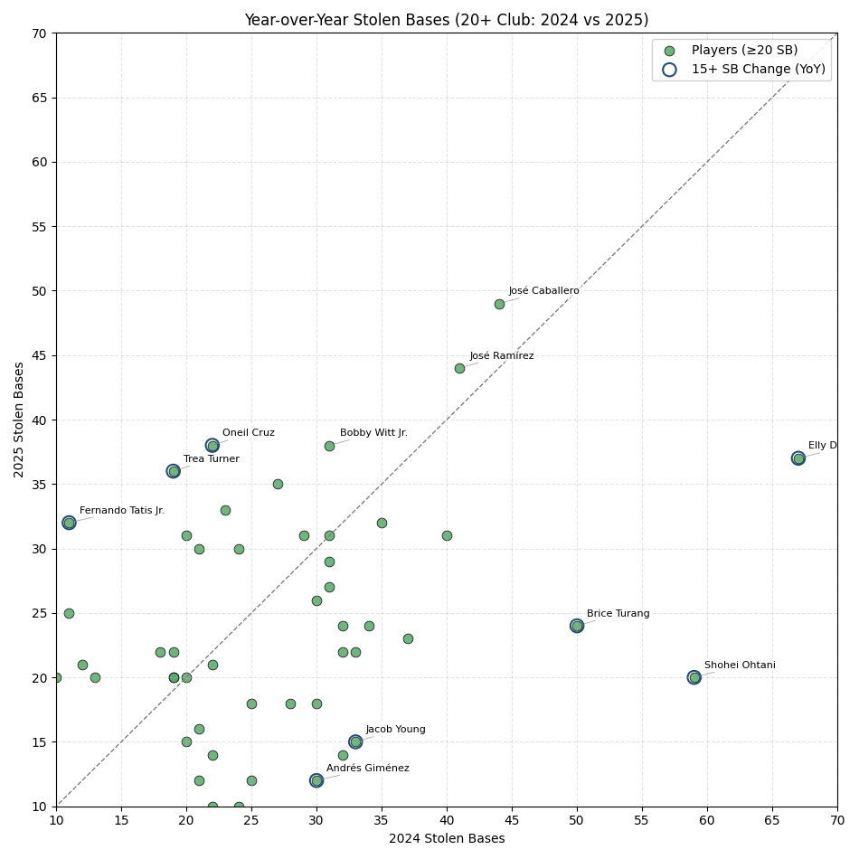
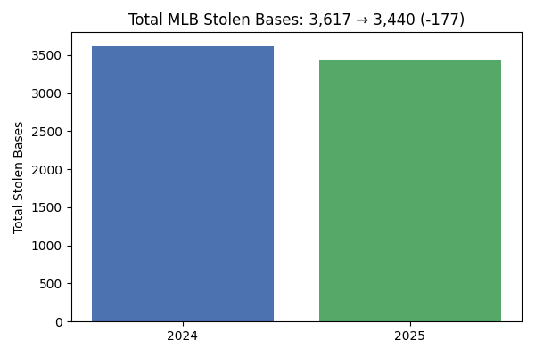
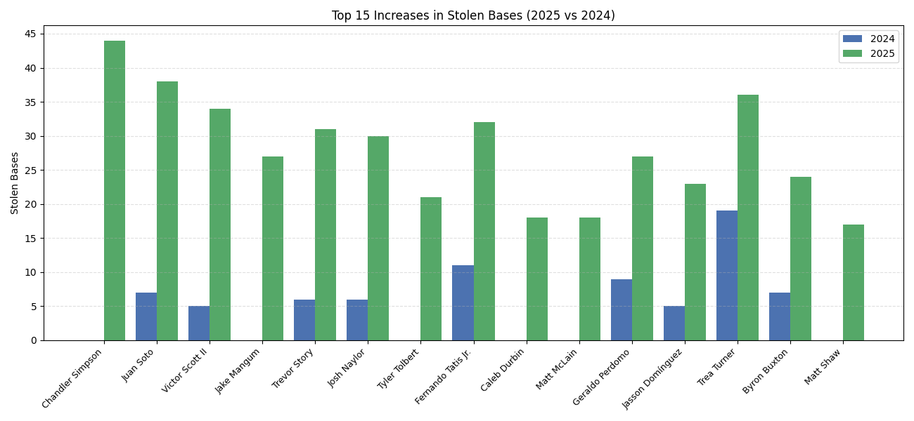
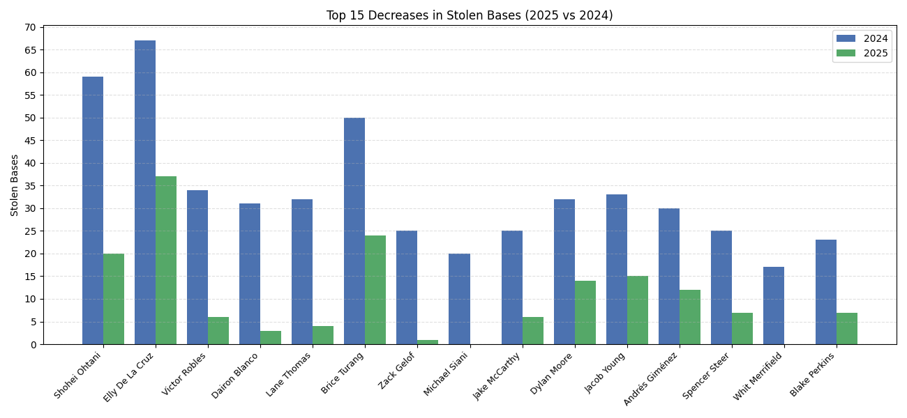

Tracking year-to-year changes in stolen base volume and identifying players with the largest directional shifts to separate systemic league trends from individual performance variations.
Aggregate league-level movement in stolen bases to quantify directional trends and magnitude of change.

League totals contextualized against 2024 baselines to illustrate macro shifts in running volume.

Largest positive movers by player, signaling increased opportunity, efficiency, or lineup context changes.

Notable declines reflecting injury, reduced green-light frequency, or evolving team approach.
